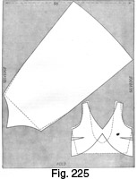

Early 1940's—Ladies' Garment Cutting and Making
by
F. R. Morris
Chapter XVI—Dressing-Gowns and Lingerie—Bias Cutting
IT is quite a new departure in works on cutting to describe the drafting of négligé garments, including underslips, dressing-gowns, knickers and tailored cami-knickers. The term "tailored lingerie" is a true one in the sense that it indicates that the garments are as well cut as a tailored garment, in contrast to the more shapeless, ill-fitting articles of clothing on the market. This chapter is concerned only with "tailored" undergarments, and the systems described for the cutting of négligé garments have been used with great success.
The extreme interest modern women take in the faultless cut and fit of their day and evening ensembles is reflected in their leisure-hour attire, for no longer are they content with shapeless garments, preferring instead perfect fit and style. Especially is this the case since the advent of the streamline mode for day and evening, for every crease or wrinkle of the foundation garments shows under the closely-fitting dress if the undergarment is not as perfectly fitting as the outer garments. The foundation garment is really the "foundation" of a smart appearance, and must be well cut.
Dressing-gowns have graduated from the wrapper stage to become imbued with design in many diverse ways. The Russian influence is shown by high-closing neck lines, wide revers and decorative sleeves contributing their quota of style, while the standard roll-collar dressing-gown is a perennial favourite.
Underslips are cut on the moulded line to fit the figure without any wrinkles or surplus material by means of bias cutting. A curving waist seam or panel seams assist the cutter in achieving the desired close fit, and darts to the bust keep the top edge close to the figure and provide a brassiere effect.
The author cuts knickers and cami-knickers on the shorts principle, with the fork section cut in one with the body part, instead of the usual method of insetting a triangular gusset between the legs. This method gives a much better all-round fitting garment, and, in the opinion of the majority of women, a much more comfortable garment. Bed and beach pyjamas are cut on the trousers principle, with either elastic or a shaped hip yoke at the waist.
DRESSING-GOWNS
Dressing-gown Draft (Fig. 215)
The system for drafting the dressing-gown is that used for dresses, with a slightly greater allowance over the half-bust measure for additional ease. No seams are allowed in the draft, but when the garment is being cut from the material ½ inch provision should be made for lapped seams.
The draft illustrates the graceful lines of a modern dressing-gown designed in the roll-collar style. The roll collar may be stereotyped, but the effect of the fronts wrapping over a greater distance at the hem than at the waist resembles the "swagger" lines of a military uniform. The waisted cut is another feature, being defined in excess of most notions. But if the dressing-gown is made to measure, it is absurd to cut the garment as though it were intended to fit anyone varying inches in size. In the wholesale trade, such allowance for fitting many wearers is permissible, but if the garment is specially cut to a particular figure, the author believes in interpreting the term "tailored dressing-gown" as meaning a fitting dressing-gown.
Measures for the draft are as follows—
- Chest = 34 inches.
- Bust = 36 inches.
- Waist = 28 inches.
- Hips = 40 inches.
- Natural waist length = 15 inches.
- Full gown length = 50 inches.
- Sleeve length = 29 inches.
- Half-back width = 6½ inches.
- Working scale = half the bust girth = 18 inches.
Square from X
- 1 from X = the back depth = one-third of the scale plus 1½ inches.
- 2 from X = the natural waist length = 15 inches.
- 3 from 2 = 8 inches down for the hip level.
- 4 from X = the full gown length.
- 5 from X = the back neck width = one-sixth of the scale less ¼ inch.
- Square up from 5 to 6 the height of the back neck curve i.e. ¾ inch.
- Shape from 6 to X.
- 7 from 1 = the half-back width net.
- Square up from 7 to 8 on the line squared out from X.
- 9 from 1 = the half-bust measure plus 1½ inches.
- Square up from 9 to 10 and down to 11.
- 12 from 10 = one-twelfth of the scale.
- 13 from 9 = half the scale less ¾ inch.
- 14 from 13 = one-sixth of the scale.
- Square up from 14 to locate point 15 on the line squared out from 12. This procedure is the same as described for coats when a shoulder dart is not used.
- 16 is midway of 9 to 13.
- 17 from 16 = 2 inches.
- Line from 17 to 12.
- 18 from 12 = one-twelfth of the scale to determine the quantity to be reduced from the gorge dart.
- 19 from 17 = one-fourth of the scale.
- Join 19 to 18.
- 20 from 8 = 1 inch.
- 21 from 20 = ½ inch. Shape the back shoulder seam from 21 to 6.
- Join 15 to 21.
- 22 from 15 = the front shoulder width equal to the back shoulder width from 21 to 6 less ½ inch.
- Square down from 22 to 23 1 inch, and shape the front shoulder seam from 23 to 15.
- 24 from 7 for the position of the sideseam = 2 inches.
- Square down from 24 to 25, 26 and 27 at the hem line.
- 28 from 25 = 3/8 inch.
- 29 from 25 = 3/8 inch.
- Overlap at the hip line from 26 to 30 and 31 by half the difference between the bust and hip measures less ½ inch.
- 32 from 27 = 26 to 31 plus 1½ inches.
- 33 from 27 = 26 to 30 plus 1½ inches.
- Shape the sideseams from 24 to 29 and 30 and from 24 to 28 and 31, then continuing down to 32 and 33 at the hem line.
- Deepen the scye ½ inch from 7 to 34 and 13 to 35 and shape the scye, hollowing ¼ inch in advance of the scye line squared up from 13.
- 36 from 11 = ¼ inch. Shape the centre line from 9 through 36 to 37 at the hem line.
- 38 from 36 = 4 inches for the front edge overlap.
- 39 from 37 = 6 inches for the front edge overlap at the hem line.
- 40 from 39 = 3 inches.
- 41 from 37 = 1½ inches.
- Shape the cut-away bottom edge run from 40 to 41 and 32 at the forepart sideseam.
- 42 from 15 = 1 inch collar stand. Shape the crease line from 42 to 38 at the waist line, breaking squarely at the gorge dart from 12 and 18 to 19.
- 43 from 12 = one-sixth of the scale.
- Shape the gorge run from 43 to 15 as shown by lining through from 44, 1½ inches below 15.
- 45 from 43 = 2½ inches.
- 46 from 9 = 5 inches for the shape of the lapels.
- Shape from 38 to 46 and 45.
- 47 from 2 = 4 inches.
- Mark out a 1 inch suppression dart at 47 8 inches in length.
- 48 from 29 = 4 inches.
- Mark out a ¾ inch dart at 48 6 inches in length.
The draft of the dressing-gown is now completed.
It is not necessary to include a sleeve system. The basic system will satisfy the needs of the deeper scye if the drafting principle of measuring the depth of the scye from the back pitch to the scye base and then subtracting ½ inch for the sleeve depth is adhered to.
The facing and collar for this design are cut as described in the chapter on collar cutting under the heading of "The Roll or Shawl Collar."
 LINGERIE
LINGERIE

Draft of an Underslip (Fig. 216)
The draft illustrated by Fig. 216 is that of a slim-fitting underslip, designed with a curving waist seam and a plain bias-cut skirt. The fronts are vandyked to form the shoulder strap positions for sewing, and at the back the top edge may either be straight-cut or cut away to a low back line.
The manipulation of the pattern is necessary to produce a perfect garment and this must not be neglected. From his experience, the author knows that it is impossible to cut a fitting garment by reducing the waist to a close measure at the sideseams only, and the little extra work entailed by cutting up the outline pattern and closing out the waist suppression is amply repaid in the finished garment.
The system allows for the top of the underslip to fit just under the arm level so as to permit lace edgings to be overlaid. In any case, it is a simple matter to adjust the top-edge level on the wearer.
Measures for the draft are as follows—
- Bust = 34 inches.
- Hips = 37 inches.
- Waist = 26 inches.
- Full length from the waist line to the hem = 30 inches.
- Working scale = half the bust girth = 17 inches.
Square from X at the breast line.
- 1 from X = 7½ inches for the natural waist level.
- 2 from 1 = 8 inches for the hip level.
- 3 from 1 = the slip length measured from the waist line = 30 inches.
- Square out from the above points.
- 4 from 2 = half the hip measure net.
- Square up from 4 to 5 and 6 and down from 4 to 7 at the hem line.
- 8 is half 2 to 4. Square up from 8 to 9 and 10 and down from 8 to 11.
- Measure from 6 to 12 half the bust measure plus ½ inch.
- Reduce the surplus shown at 12 to X from the sideseams at 13 and 14 from 10.
- 15 from 14 = one-twelfth of the scale less ½ inch.
- 16 from 6 = one-sixth of the scale.
- Join 16 to 15.
- Square down from 13 to 17 and 14 to 18.
- 19 from 17 = ½ inch.
- 20 from 18 = ½ inch.
- 21 from 11 = 1½ inches.
- 22 from 11 = 1½ inches.
- Shape the sideseams from ½ inch inside 15 to 20, 8 and 22 and from 13 to 19, 8 and 21.
- 23 from 1 = half the waist measure (26 inches) plus 2 inches for ease plus the distance from 19 to 20.
- Square up from 16 to 25 2½ inches for the shoulder-strap point.
- 26 from 15 = ½ inch.
- Shape from 6 to 25 and from 25 to 26.
- Shape down from 26 to 27 one-sixth of the scale for the position of the bust dart.
- 28 from 27 = the quantity indicated from 14 to 15.
- Shape the bust dart 4 inches in length from 27 and 28 to 29.
- 30 from 5 = 3½ inches.
- 31 from 20 = 3½ inches for the position of the front waist suppression lines.
- 24 from 23 = two-thirds of the distance from 23 to 5 for the back waist suppression.
- Shape out the front waist suppression from 31 to 29, and shape the high waist seam from 30 to the sideseam at 20, breaking at the suppression lines at 32 and 33.
- 34 from 1 = one-sixth of the scale plus ½ inch for the position of the back waist suppression.
- Reduce the suppression quantity indicated from 23 to 24 at 35 and 36 from 34.
- Square up from 34 to the top edge line and down to 37 at the hip level and 38 at the hem line.
- 39 is where the line squared up from 34 touches the breast line.
- Square down from 31 to 40 and 41 for the manipulation lines on the front skirt.
This completes the draft of the underslip style with a high back line.
For a low back—
- 42 from 26 = ½ inch.
- 43 from 13 = ½ inch.
- 44 from 1 = 2½ inches. Shape the low back line from 43 to 44, breaking at the suppression lines as indicated at 45 and 46.
Manipulation of the Outline Pattern for Waist Suppression
Cut through the waist seam from 19 to 1 and up the manipulation lines from 35 and 36 to 39. Close out the waist suppression and re-mark round the outline of the back pattern to give a reconstructed bodice for both high and low back lines.
Cut down the manipulation lines from 35 and 36 to 37 and up from 38 to 37. Close out the waist suppression from 36 to 35 to open the skirt width at the hem line and reconstruct the back skirt section.
The front of the underslip may have the bust dart only, or the contour shape so provided may be transferred to the waist seam or down from the top edge of the fronts, by cutting through from 32 and 33 to 29 or from A to 29. If the dart is required at A, close out both the side dart and the waist suppression to open the dart line from A to 29. Similarly, if darts are required in the waist from the seam upwards, close out the sideseam dart from 27 to 28 to open the suppression lines from 29 to 32 and 33. The quantity indicated at 32 to 33 by this manipulation may be reduced by two or three darts instead of a single large dart and a smart effect will be achieved.
Close out the skirt waist suppression by moving point 32 to 33, pivoting from 40, and thereby causing the skirt to open at the hem line from 41.
Panelled Underslip (Fig. 217)
The panelled underslip is a great favourite among women, for the fitting qualities could not be bettered by any other style.
Measures for this draft are as before—
- Bust = 36 inches.
- Hips = 39 inches.
- Length from the waist to the hem line = 30 inches.
To draft—
Square from X.
- 1 from X = the waist level = 7¼ inches.
- 2 from 1 = 8 inches down for the hip level.
- 3 from 1 = the full length taken from the waist to the hem line.
- Square out from the above points.
- 4 from 2 = half the hip measure net.
- Square up from 4 to 5 and 6 and down to 7 at the hem line.
- The sideseam is located at 8, half the distance from 2 to 4.
- Square up from 8 to 9 and 10 and down to 11.
- Measure from 6 to 12 half the bust measurement plus ½ inch.
- Reduce the surplus quantity shown from X to 12 from the sideseams at 13 and 14 from 10.
- Square down from 13 and 14 to 16 and 15 on the waist line.
- 17 from 15 = ½ inch.
- 18 from 16 = ½ inch.
- 19 from 11 = 1½ inches.
- 20 from 11 = 1½ inches.
- Shape the sideseams from 13 to 18, 8 and 19 and from 14 to 17, 8 and 20.
- Measure from 1 to 21 half the waist size plus the distance from 17 to 18.
- The back waist suppression takes two-thirds of the surplus quantity from 21 to 5 as indicated by 22 from 21.
- The front waist suppression takes the remaining one-third from 22 to 5.
- 23 from 6 = one-sixth of the scale plus ½ inch.
- Square up from 23 to 24 and down from 23 to 25 and 26.
- Reduce the front panel seam ½ inch at 24, and the front waist suppression quantity indicated from 22 to 5 at 25, and shape the panel seams from 25 and 26.
- Square down from 26 to 27.
- 28 from 27 = 1 inch.
- 29 from 27 = 1 inch.
- Shape the panel seams from 26 to 28 and 29.
- 30 from 1 = one-sixth of the scale plus 1 inch.
- Square up to 31 and 32 and down to 33 and 34 at the hem line.
- 32 from 31 = 1½ inches.
- 35 from 34 = 1 inch.
- 36 from 34 = 1 inch.
- Shape the panel seams from 32 to 31, suppressing the back waist suppression, quantity at 30, and continue down through 33 to overlap at 35 and 36.
- 37 from 14 = ½ inch.
- 38 from 13 = ½ inch.
- 39 from X = 1 inch.
- Shape the top-edge run from 6 to 24, 37, 38, 32 and 39.
The shape of the top is to the finished length.
This completes the draft of a panelled seam under-slip.
Draft of Cami-knickers (Fig. 218)
The cami-knicker draft presented is intended as a basis for variation of design, and no pretence has been made to elaborate the system or to describe a definite style.
As a basic outline, this draft can be adapted to any style of cami-knickers cut with the fork extension in one with the skirt section.
A hip yoke is included in the basic draft to demonstrate a characteristic style feature, and the skirt sections below are cut on the bias of the material without a sideseam.
Measures for the draft are as follows—
- Bust = 34 inches.
- Waist = 26 inches, increased to 28 inches for the draft.
- Hips = 37 inches.
- Body-rise length = 11½ inches.
- Sideseam length from the waist = 16½ inches, allowing for a 5-inch leg seam.
To draft—
Square from X.
- 1 from X = 7¼ inches down for the natural waist level.
- 2 from 1 = 8 inches down for the hip level.
- 3 from 1 = the body-rise length = 11½ inches.
- 4 from 1 = the sideseam length = 16½ inches.
- Square out from the above points.
- 5 from 2 = half the hip measure plus 1 inch for ease.
- Square up from 5 to 6 and 7 and down to 8.
- The sideseam is located at 9 half the width from 2 to 5.
- Square up from 9 to 10 and 11 and down to 12.
- Measure from 7 to 13 half the bust measure plus ½ inch for ease.
- 14 from 15 = the distance from 2 to 3.
- 15 from 14 = one-sixth of the hip scale (18½ inches) plus ½ inch.
- Square down from 15 to 16 equal to the length from 14 to 8.
- 17 from 3 = the length from 14 to 15.
- 18 from 17 = the back fork quantity of 2½ inches.
- Square down from 18 to 19 equal to the length from 3 to 4.
- Shape the bottom edge of the skirt from 19 to 4 and 16 to 8.
- Reduce the surplus shown at the back from X to 13 from the sideseams at 20 and 21 from 11.
- Square down from 20 and 21 to 23 and 22.
- 24 from 22 = ½ inch.
- 25 from 23 = ½ inch.
- 26 from 12 = 1½ inches.
- 27 from 12 = 1½ inches.
- Shape the sideseams from 20 to 25, 9 and 26 and from 21 to 24, 9 and 27.
- 28 from 7 = one-sixth of the scale plus ½ inch.
- Square up 2½ inches from 28 to 30.
- 29 from 21 = one-twelfth of the scale less ½ inch.
- Join 28 to 29.
- 31 from 29 = ½ inch.
- Shape the top edge of the fronts from 7 to 30 and 31.
- Measure from 1 to 32 half the waist girth plus the quantity from 24 to 25.
- The back waist suppression takes two-thirds of the surplus from 32 to 6 as indicated from 32 to 33.
- 34 from 1 = one-sixth of the scale plus 1 inch for the position of the back waist suppression manipulation lines.
- Square up from 34 to 35.
- 36 from 34 = half the quantity from 32 to 33.
- 37 from 34 = half 32 to 33.
- Mark the waist suppression from 36 and 37 to 35.
- 39 from 3 = 1¼ inches.
- 38 from 3 = one-fourth of the waist measure.
- Shape the seat-angle line through 39 to 38 and up to 40.
- 40 from the waist line = 1¼ inches.
- Shape the waist seam of the knicker section from 25 to 40.
- Shape the seat seam from 40 to 38 and 18.
- 41 from 25 = 2½ inches for the commencement of the hip yoke at the sideseams.
- 42 from 24 = 41 from 25.
- 43 from 6 = the depth of the hip yoke at the centre front.
- Shape from 43 to 42 and from 41 to 38 as shown.
- 44 from 24 = 3 inches for the position of the front waist suppression.
- Shape out the waist suppression as indicated from 33 to 6 from the dart at 44 to 45.
- 46 from 31 = one-sixth of the scale for the position of the sideseam dart.
- 47 from 46 = the length from 21 to 29.
- Shape out the dart from 46 and 47 to 48 4 inches in length.
The lower draft illustrates the placement of the back and front skirt sections together at the sideseams from 26 to 27 and 41 to 42, to enable the entire section to be cut in one piece on the bias of the material.
Cut through the waist seam from 6 to 24 and close out the suppression from the bodice section and from the front hip yoke. If a greater amount of flare is required in the skirt section, this should be cut through and opened out as described in the drafts of dresses with flared skirts.
Draft of Cami-knickers with a Brassiere Top (Fig. 219)
The following draft of cami-knickers was taken from an actual drafted pattern which gave extreme satisfaction. The brassiere top is very suitable for evening underwear, giving support to the bust with the minimum of material.
Measures for the draft are as follows—
- Bust = 32 inches.
- Waist = 25 inches, increased to 27 inches for the draft.
- Hips = 36 inches.
- Body-rise length = 11½ inches.
- Sideseam length = 16½ inches.
- Leg length = 5 inches.
- Working scale = half the bust girth = 16 inches.
To draft—
Square from X.
- 1 from X = the natural waist length from the breast line = 7¼ inches.
- 2 from 1 = 8 inches for the hip level.
- 3 from 1 = the body-rise length = 11½ inches.
- 4 from 3 = half the hip measure plus 1 inch for ease.
- Square up from 4 to 5, 6 and 7.
- 8 from 4 = one-sixth of the hip scale plus ½ inch.
- Shape the fork run from 8 to the centre front line at 6.
- 9 from 6 = the sideseam length = 16½ inches.
- Square down from 8 to 10 equal to 4 to 9.
- 11 from 1 = the sideseam length = 16½ inches.
- Square out from 3 to 12 equal to the length from 4 to 8.
- 13 from 12 = the back fork quantity = 2½ inches.
- Square down from 13 to 14 the leg length of 5 inches.
- The sideseam is located at 15, half the width from 2 to 5.
- 16, 17, 18 and 19 are squared from 15.
- Measure from 7 to 20 half the bust girth plus ½ inch for ease.
- Reduce the surplus quantity shown from X to 20 from the sideseams at 21 and 22 from 17.
- Square down from 21 to 23 and 22 to 24.
- 25 from 23 = ½ inch.
- 26 from 24 = ½ inch.
- Shape the sideseams from 21 to 25, 15 and 1½ inches in front of 19.
- Shape the front sideseam from 22 to 26, 15 and 1½ inches behind 19.
- Measure from 1 to 27 half the waist measure plus the distance from 25 to 26.
- The back waist suppression takes two-thirds of the surplus quantity shown from 27 to 6 as indicated from 27 to 28.
- The front waist suppression takes the remaining one-third as shown from 28 to 6.
- 29 from 3 = 1 inch.
- 30 from 3 = one-fourth of the waist measure.
- Line through the seat angle from 29 to 30 and 31 1¼ inches above the waist seam.
- 32 from 1 = one-sixth of the scale plus 1 inch for the position of the back waist suppression manipulation lines.
- 33 and 34 from 32 = the suppression quantity indicated from 27 to 28.
- Square up from 32 to 35 and mark out the back waist suppression manipulation lines from 33 and 34 to 35
- Shape the waist seam from 25 to 31.
- 36 from 22 = one-twelfth of the scale less ½ inch.
- 37 from 7 = one-sixth of the scale plus ½ inch.
- Join 37 to 36.
- Square up 2½ inches to 38 from 37.
- 39 from 36 = ½ inch.
- Shape the top-edge run from 7 to 38 and 39.
- 40 from 7 = 1 inch.
- 41 from 26 = 4 inches.
- Shape the under-seam of the brassiere top from 40 to 41 as shown.
- Reduce the quantity added from 22 to 36 plus ½ inch from 39 to 41 in two darts as indicated at 42 and 43, each dart being 3½ inches in length.
- 44 from 21 = ½ inch, the amount added to the quantity reduced from the bust darts.
- 45 from 1 = 2 inches to define the depth of the top-edge run at the centre back waist.
- Shape the top edge of the bodice at the back waist from 44 to 45, breaking squarely at the suppression lines as indicated by points 46 and 47.
- If a small dart is required at the front of the brassiere seam, reduce the sideseam ½ inch at 48 and ½ inch at 49 to nothing at 15.
- Mark out a ½ inch dart at 50, 2½ inches back from 40.
- Shape the hip-yoke seam from 51, 2 inches down from 26 to 52, 6 inches down from 6.
- 53 from 25 = the distance from 26 to 51.
- Shape the back yoke seam from 53 to 30.
After the back waist suppression has been closed out from 33 to 34 and 46 to 47, the bodice section from 45 to 1, 31 and 30 may be cut in one piece with the hip-yoke section, indicated by points 31 to 25, 30 and 53, on the fold of the material.
The lower draft shows the skirt sections laid in position to be cut without a sideseam from 53 and 51 to 25 and 26.
To obtain a skirted effect at the centre front and back, cut through the pattern from 9 to 52 and 11 to 30 and insert a 1½-inch flare wedge at each point.
The skirt section should be cut on the bias of the material for a slim-line effect.
It will be noticed that the front waist suppression quantity has been ignored on this draft, but it is not advisable to cut garments of this type too close-fitting; otherwise, they will be found difficult to get into without a side opening, unless they are cut entirely on the bias.
Knickers Fitted at the Waist (Fig. 220)
Figs. 220 (a) and (b) show the drafting of pantie knickers cut in the fashionable abbreviated line and fitted at the waist. Fig. 220 (a) shows knickers with small tucks at the front and back waist to gain the required fit, while Fig. 220 (b) has a shaped hip yoke at the front waist and is gathered in at the back waist by elastic. The former style is cut with a side-seam and a side opening on the shorts principle, and the latter style is cut to resemble a skirt without a seam at the side.
Measures for Fig. 220 (a) are as follows—
- Waist = 26 inches.
- Hips = 37 inches.
- Body-rise length = 11 inches.
- Sideseam length = 16 inches.
- Leg length = 5 inches.
- Working scale = half the hip measure = 18½ inches.
To draft—
Square from X.
- 1 from X = 8 inches down for the hip level.
- 2 from X = the body-rise length calculated by subtracting the leg length from the sideseam length = 11 inches.
- 3 from 2 = the leg length = 5 inches.
- Square out from the above points.
- 4 from 2 = one-fourth of the hip measure plus ½ inch.
- Square up from 4 to 5 and 6 on the lines squared out from 1 and X respectively.
- 7 from 6 = one-fourth of the waist measure plus ½ inch for two seams.
- 8 from 7 = 1½ inches for two small tucks at the front.
- 9 from 4 = one-sixth of the scale plus ½ inch.
- Shape the fork run from 6 to 9.
- Square down from 9 to 10 for the inside leg seam.
- 11 from 6 = 3 inches.
- 12 from 11 = 1½ inches for the position of the two front tucks.
- Shape the sideseam from 8 to 1 and 1 inch in front of 3.
- Shape the bottom edge run from the sideseam to 10, adding ½ inch of round.
THE UNDERSIDES
To draft the undersides—
- 13 is half 4 to 9 for the seat-angle location.
- 14 from 4 = one-fourth of the waist measure.
- Line the seat angle from 13 through 14 to 15, 1½ to 2 inches above the waist line.
- 16 from 9 = 2 inches.
- 17 from 10 = 2 inches.
- Shape the seat seam from 15 to 14 and 16 and the inside leg seam from 16 to 17.
- Measure from 15 to 18 one-fourth of the waist measure plus 2 inches for seams and tucks; ½ inch is taken up in the seams.
- Measure from 1 to 5 and apply this quantity from 14 to 19 equal to half the hip measure plus 2 inches for ease and seams.
- 20 from the front sideseam = 2 inches.
- Shape the under sideseam from 18 to 19 and 20 and the bottom-edge run from 20 to 17, adding ½ inch of round at the fronts.
- 21 from 18 = 3 inches for the position of the first ¾-inch tuck.
- 22 from 21 = 1½ inches for the position of the second tuck.
- Mark each tuck 5½ inches in length to complete the draft of Fig. 220 (a).
As previously indicated, the draft in Fig. 220 (b) is based on an adaptation of the skirt basis system.
Measures for the draft are as for Fig. 220 (a).
To draft—
Square from X.
- 1 from X = 8 inches down for the hip level.
- 2 from X = the body-rise length = 11 inches.
- 3 from 2 = the leg length = 5 inches.
- Square out from 2 to 4 the front fork quantity, i.e. one-sixth of the scale plus ½ inch.
- Square down the inside leg seam from 4 to 5 equal to 2 to 3.
- Shape the front fork run from X to 4.
- Square out from 1 to 6 half the hip measure plus 1 inch for ease.
- 7 is half the distance from 1 to 6 less 1 inch from 1.
- Pivoting from 7, sweep back from 6 to 8 3 inches to obtain the flared width in the legs.
- Join 7 to 8 and square up from 8 to 9 8 inches, the distance from 1 to X.
- Join 9 to X and square back from 9 to 10 on the extension of line X to 1.
- 11 from X = half the distance from X to 9 less 1 inch from X.
- 12 from 11 on the line joining 11 to 7 = one-third of the distance from 10 to X.
- 13 from X = one-fourth of the waist measure plus ½ inch for seams.
- 14 from 12 = the distance from 12 to 13.
- Shape the side opening from 13 and 14 into the line from 12 to 7, making the opening 6 inches in length.
- On the line joining 8 to 9, continue down from 8 to 15 the body-rise length, and from 15 to 16 the inside leg length of 5 inches.
- 17 square from the line from 9 to 16 = the front fork quantity from 2 to 4 plus 2½ inches for the back fork addition.
- Square down from 17 to 18 the leg length of 5 inches.
- 29 from 15 = the distance from 2 to 4.
- 10 is half the distance from 15 to 19.
- 21 from 15 = one-fourth of the waist measure for the seat-angle location.
- Line the seat angle through from 20 to 21 and up to 22, 1½ inches above the waist line from 9 to X.
- Shape the seat seam from 22 through 21 to 17 and the back waist from 14 to 22.
- Shape the bottom edge of the legs from 5 through 3 to 16 and 18, making the length at the sideseam equal to the length from X to 3.
- 23 from 13 = 2½ inches.
- 24 from X = 5½ inches.
- Shape the hip-yoke seam from 23 to 24 as shown.
When cutting from the material, if the yoke from X to 24 is cut on the fold of the material, reduce a seam at the front so that the length from 23 to 24 on the yoke is equal to 23 to 24 on the leg section after a seam has been sewn away from 24 to 4.
Pyjamas (Fig. 221)
Figs. 221 (a) and (b) show the drafting of two varieties of pyjamas. The first draft illustrates pyjamas cut without a sideseam on the crease of the material and loose-fitting at the waist, elastic being relied on to draw the surplus material to the figure. This style of pyjama is made without a sideseam opening, so that the waist must be sufficiently large to enable the garment to pass over the hip line.
The second draft is cut on modern pyjama lines. The waist is fitted by small darts at the front and back, and a sideseam with an opening makes possible more shape in the legs.
Measures for Fig. 221 (a) are as follows—
- Waist = 28 inches.
- Hips = 40 inches.
- Body-rise length = 12 inches.
- Inside leg length = 29 inches.
- Knee width = 24 inches.
- Bottom width = 26 to 28 inches.
- Working scale = half the hip measure = 20 inches.
Fig. 221 (a)
To draft—
Square from X.
- 1 from X = 8 inches down for the hip level.
- 2 from X = the body-rise length = 12 inches.
- 3 from 2 = the inside leg length = 29 inches.
- The position of the knee on the draft is located at 4, half the inside leg length plus 2 inches up from 3.
- Square out from the above points.
- 5 from 2 = one-fourth of the hip measure plus 1 inch.
- Square up from 5 to 6 and 7 on the lines squared out from 1 and X.
- 8 from 5 = one-sixth of the scale plus ½ inch.
- Shape the front fork run from 8 to 7 as indicated.
- 9 from 4 = one-half of the knee width less ½ inch.
- 10 from 3 = half the bottom width less ½ inch.
- Shape the inside leg seam from 8 to 9 and 10 to complete the draft of the topsides.
THE UNDERSIDES
- 11 = half of 5 to 8.
- 12 from 5 = one-fourth of the waist measure.
- Line the seat angle through from 11 to 12 and 13 2 inches above the waist line.
- 14 from 8 = 2½ inches. Shape the seat-seam run from 13 through 12 to 14 as shown.
- Shape the back waist seam from X to 13.
- 15 from 9 = 1 inch for seams and to make up the knee width.
- 16 from 10 = 1 inch for seams and to make up the bottom width.
- Shape the inside leg seam from 14 to 15 and 16.
- Shape the bottom-edge run from 3 to 10 and 16, adding ½ inch of round to complete the draft.
Fig. 221 (b)
Measures are as for Fig. 221 (a).
To draft—
Square from X.
- 1 from X = the hip level = 8 inches down from the waist.
- 2 from X = the body-rise length = 12 inches.
- 3 from 2 = the inside leg seam length = 29 inches.
- The position of the knee is located at 4, half the leg length plus 2 inches up from 3.
- Square out from 2 to 5 one-fourth of the hip measure plus ½ inch.
- Square up from 5 to 6 and 7 on the lines squared out from 1 and X.
- 8 from 7 = one-fourth of the waist measure plus ½ inch for seams.
- 9 from 8 = 1½ inches for two ¾-inch front waist darts.
- 10 from 7 = one-sixth of the scale for the position of the first dart.
- 11 from 10 = 1½ inches for the position of the second dart.
- Shape out the darts at 10 and 11 as shown.
- 12 from 5 = one-sixth of the scale plus ½ inch.
- Shape the fork run from 12 to 7.
- 13 from 4 = ½ inch.
- 14 from 3 = 1 inch.
- Shape the sideseam from 9 to 1, 2, 13 and 14.
- 15 from 13 = half the knee width measure.
- 16 from 14 = half the bottom width measure.
- Shape the inside leg seam from 12 to 15 and 16.
This completes the drafting of the topsides.
THE UNDERSIDES
- 17 is midway of 5 to 12.
- 18 from 5 = one-fourth of the waist measure.
- Line the seat angle through from 17 to 18 and up to 19.
- 19 from the waist line = 2 inches.
- 20 from 19 = one-fourth of the waist measure plus 2 inches for seams and two back waist darts.
- 21 from 20 = one-sixth of the scale for the position of the first waist dart.
- 22 from 21 = 1½ inches for the position of the second waist dart.
- Shape out each dart, as shown, 5 ½ inches in length.
- Measure from 1 to 6 on the topsides and apply this quantity from 18 diagonally to 23, making the total distance half the hip measure plus 2 inches.
- 24 from 13 = ½ inch.
- 25 from 14 = ½ inch.
- Shape the sideseam from 20 to 23, 24 and 25.
- 26 from 12 = the back fork quantity of 2½ inches.
- Shape the seat seam from 19 to 18 and 26 as shown.
- Measure up the full knee width from 13 to 15, and apply this quantity plus 1 inch for seams from 24 to 27.
- Measure up the full bottom width from 14 to 16, and apply this quantity plus 1 inch for seams from 25 to 28.
- Shape the inside leg seam from 26 to 27 and 28.
- Shape the bottom edge from 25 and 14 to 16 and 28, adding ½ inch of round.
This completes the pyjama draft.
LINGERIE CUT ON THE BIAS
Bias-cut Cami-knickers (Fig. 222)
The draft of cami-knickers here presented is suitable for bias cutting only, for the waist suppression is reduced entirely from the sideseams in contradistinction to usual standards, and it is only possible to do this when the garment is so cut on the cross, which enables the material to assume the shape of the figure without any drags or folds of surplus material.
It is advisable, when designing bias-cut garments, to keep all the design seams at an angle of forty-five degrees from the vertical, so that, when the pattern outline is placed on the bias of the material, these design seams will all be on the "straight" and twisting of the various sections will be minimized.
The design of these cami-knickers embodies a brassiere-top effect and diagonal seams from the side-seams to the centre front and back.
Measures for the draft are as follows—
- Waist = 26 inches.
- Hips = 37 inches.
- Sideseam length from the waist to the leg = 16½ inches.
- Inside leg length = 5 inches.
- Body-rise length = 11½ inches.
- Working scale = half the hip measure = 18½ inches.
To draft—
Square from X.
- 1 from X = the length from the breast line to the waist = 7¼ inches.
- 2 from 1 = the hip level from the waist line = 8 inches down.
- 3 from 1 = the body-rise length = 11½ inches.
- 4 from 3 = the leg length = 5 inches.
- Square out from the above points.
- 5 from 2 = half the hip measure plus 1 inch for ease.
- Square up from 5 to 6 and 7 and down to 8.
- 9 from 8 = the front fork quantity of one-sixth of the scale plus ½ inch.
- Shape the fork run from 9 to 6.
- Square down from 9 to 10 the inside leg length of 5 inches.
- Measure from 7 to 11 half the bust measure net.
No addition has been made for ease over the bust measure as the author finds that with bias-cut garments they need to be cut to the exact size, otherwise there is a tendency for the weight of the garments to drop and pull the bodice part out of position.
Cutting the garment to the exact size or even slightly smaller causes the bias to stretch outwards instead of dropping downwards.
- The sideseam is located at 12, half the distance from 7 to X.
- Reduce the surplus quantity from X to 11 from the side-seams at 12 to A and B.
- Square down from 12 to 13 and 14 on the lines squared out from 1 and 2.
- Square down from A to 15.
- 16 from 15 = 1¼ inches.
- Square down from B to 17.
- 18 from 17 = 1½ inches.
- Shape the front sideseam from A to 16 and the back sideseam from B to 18.
- 19 from 3 = the distance from 8 to 9.
- 20 from 19 = the back fork quantity of 2½ inches.
- Square down from 20 to 21 the inside leg length of 5 inches.
- 22 from 3 = 1 inch.
- 23 from 3 = one-fourth of the waist measure.
- 24 from the waist line = 1½ inches.
- Line the seat angle from 22 through 23 to 24.
- 25 from 24 = the length from 1 to 18.
- Shape from 25 and 16 to 14 for the sideseams.
- 26 from B = ½ inch.
- Square across from 26 to 27 for the top edge.
- 28 from 7 = one-sixth of the scale plus ½ inch.
- Measure up 2½ inches from 28 to 29.
- Shape from 7 to 29.
- 30 from 16 = 3 inches.
- Shape from 30 to 7.
- Shape the top edge of the brassiere section from 29 to A, and then reduce the difference between the side-seam at the back by a bust dart at 31 3 inches down from A, making the dart 3 inches in length.
- 32 from 16 = 3 inches.
- 33 from 6 = 6 inches.
- Shape the yoke seam from 32 to 33.
- 34 from 25 = 3 inches.
- 35 from 24 = the same distance as 33 from 6.
- Shape from 34 to 35.
- Square down from 14 to 36.
- 37 from 36 = 1½ inches.
- 38 from 36 = 1½ inches.
- Complete the shaping of the sideseams from 14 to 37 and 38.
When cutting from the material, the top bodice section from 27 to 1, 24 and 35 is cut in one with the hip yoke section from 24 to 25, 34 and 35, on the fold of the material.
Cut the garment from the material on the bias as shown by Fig. 223.
Cutting on the Bias (Fig. 223)
Fig. 223 illustrates two methods of cutting the cami-knickers on the bias of the material.
Fig. 223 (a) shows a layout taking 1½ yards 16 inches of 36-inch width silk with all sections of the garment cut the same way of the material or pattern. The diagonal lines indicate the true bias of the grain, and the various parts of the garments should be placed to run exactly in alignment with the bias lines, otherwise twisting will occur in the making-up.
The front skirt or leg section should be marked out first with 1 inch added down the inside leg seam for the leg fastening.
Allow seams all round the pattern before cutting out; ½ inch is the usual seam allowance, which gives sufficient material for either French or plain seams.
The brassiere section is taken out in the corner below the bottoms of the legs as indicated, with ½ inch allowed for seams at each edge.
Further up the length, the back and fronts of the body part are marked out. The fronts are indicated by the dash lines and are taken from the single width either above or below the back part. Allow ½ inch seams round each pattern edge, and then complete the layout by placing the back leg section above the body part towards the end of the length.
Add 1 inch down the inside leg seam for the leg fastening, and add ½ inch seams throughout.
Fig. 223 (b) illustrates another layout for bias cutting, in which the front and back leg sections are cut in one piece without a sideseam. The same amount of material, 1½ yards, is used and, to commence, this length is folded end to end so that the selvedges are level and we have a length ¾ yard by 36 inches in width.
The parallel lines show the exact bias, and the layout is as follows. Place the back and front body parts in the left corner of the length, and mark out to their full width so that one section can be taken from the top layer of material and the other section from the under layer.
Place the sideseams of the back and front leg sections together, and then mark out on the length as indicated. Allow ½ inch seams at all seam edges and 1 inch at each inside leg seam for the leg fastening.
Draft of a Foundation for a Nightgown or an Underslip (Fig. 224)
The following draft illustrates a foundation for adapting to nightgown or underslip cutting on the bias of the material. Based on the dress system, the draft illustrates the reduction of waist suppression without manipulation.
Measures for the draft are as follows—
- Bust = 36 inches.
- Waist = 28 inches.
- Hips = 39 inches.
- Natural waist length = 15 inches.
- Full length = 52 inches.
- Working scale = half the bust girth = 18 inches.
To draft—
Square from X.
- 1 from X = the back depth = one-third of the scale plus 1½ inches.
- 2 from X = the natural waist length = 15 inches.
- 3 from 2 = 8 inches down for the hip level.
- 4 from X = the full length.
- Square out from the above points.
- 5 from X = the back neck width = one-sixth of the scale less ¼ inch.
- 6 from 5 = the height of the back neck curve = ¾ inch.
- Shape from 6 to X.
- Square out from 3 to 7 half the hip measure net plus 1 inch.
- Square up from 7 to 8, 9 and 10 and down to 12 at the hem line.
- 11 from 10 = one-twelfth of the scale.
- 13 from 11 = one-sixth of the scale.
- 14 is half of 7 to 3 for the position of the sideseam.
- Square up from 14 to 15 and 16 and down to 17.
- 18 from X = the normal half-back width = 6½ inches.
- 19 is ¼ inch out from a point 1 inch down from 18.
- Join 13 to 19.
- 20 from 13 = 19 to 6 less ½ inch.
- 21 from 20 = ½ inch. Shape the front shoulder seam from 21 to 13.
- Measure from 9 to 22 half the bust measure plus 1 inch.
- Reduce the surplus quantity shown at 1 to 22 from the sideseams at 16 to 23 and 24.
- 25 from 24 = one-twelfth of the scale less ½ inch.
- 26 from 9 = one-fourth of the scale less 1¼ inches.
- 27 is half of 9 to 26.
- Join 27 to 25.
- 28 from 25 = ½ inch.
- Square down from 24 to 29 and 23 to 30.
- Measure from 8 to 31 ¼ inches less than 8 to 29.
- 32 from 30 = 1½ inches. Shape the sideseam from 23 to 32 and to 14 and 33, overlapping 4 inches from 17 to 33.
- 34 from 17 = 4 inches.
- Shape the front sideseam from 31 to 14 and 34.
- Shape the bodice sideseam from 28 to 29.
- The difference shown from 29 to 31 is reduced by gathers under the bust at the front waist seam.
- 35 from 28 = one-sixth of the scale for the position of the bust dart.
- Shape out the bust dart, as shown, 4 inches in length.
- 36 from 13 = the length of the front opening = 9½ inches.
- Shape the waist seam from 36 to 31.
- The shoulder-strap section is located by finding the centre of the front shoulder at 37, and then making the strap the required width equally each side of this point to 38 and 39.
- Shape the front neck opening from 38 to 36 and the armhole from 39 to ½ inch below 28 as shown.
- 40 is half of 6 to 19.
- Make the back shoulder strap from 41 to 42 equal to the width from 38 to 39 at the front shoulder.
- 43 from 2 = 3 inches for the depth of the back waist decollete.
- Shape from 41 to 43 and from 42 to 23 for the shape of the armhole at the back.
This completes the foundation draft for either a nightgown or an underslip.
When cutting from the material on the bias, it will be necessary to cut the skirt section with a corner piece joined on, as it is impossible to take the length out on the bias owing to the material used being only 36 inches approximately in width. It is the usual practice to make this join at the sideseam on one side only.
Fig. 225
The layout for bias-cutting illustrated by Fig. 225 is useful for the general method of placing the pattern sections on the silk to the best advantage. The layout takes 2½ yards of 36-inch width silk, and the skirt sections are cut without sideseam joins.